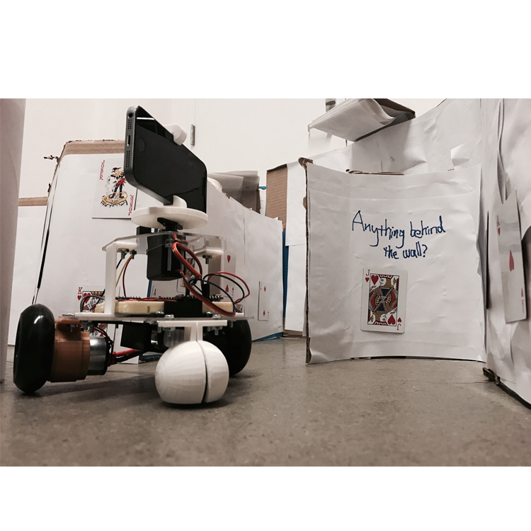

Telie
Telie is a telepresence robot designed to allow users to see things at different scales and to interact with people and environments remotely.
Main functions of the robot
Users can experience various scaled models as if they are really walking through the space themselves.
The design enables users to roam remotely and to interact with people or environments in distant locations.
Main features
Hand Control | Multi-photon Communication | Camera Control
Intro
-
BACKGROUND
Info 4320 provides an introduction to modern rapid prototyping techniques such as laser cutting, 3D printing and microcontroller programming (such as the Arduino system). Using these tools, small multidisciplinary groups conduct the hardware project of their choice exploring topics as varied as: Universal Access, tangible interfaces, toys, personal or medical assistants and new musical instruments.
-
OUR RESEARCH QUESTION
How can a robot improve remote interaction?
-
KEY GOAL
To introduce a sense of empathy and gives users more possibilities to explore different non-virtual environments in a first person perspective.
To enable much more interactivity than regular video chat.
Main Function of the Robot
1. Users can experience various scaled models as if they are really walking through the space themselves.
For example, the vehicle can be placed in a miniature architecture model and the clients can view the interiors on a human scale to get a better sense of the spatial qualities of the interior. This introduces a sense of empathy and gives users more possibilities to explore different non-virtual environments in a first person perspective.
Main Function of the Robot
2.The design enables users to roam remotely and to interact with people or environments in distant locations. It also enables much more interactivity than regular video chat.
It is a camera vehicle controlled by a user. The camera will rotate up/ down and left/ right to mimic the user’s hand movements. The camera movements also allow users to view freely with a 180 degrees view angle in the horizontal direction. The car can be controlled to go any places the users want to explore. Users can navigate their directions by using hand gestures to control their navigation.
Design Process
Step 1
Observe
Observe remote interaction.
Define good/bad team interactions.
Identify problems.
Step 2
Think
Brainstorm robot ideas.
Research ways for remote interaction improvement.
Step 3
Design
Low-Fi prototype.
Mid-Fi prototype.
Hi-Fi prototype.
Step 4
Test
Survey users.
Step 5
Improve
Rescale.
Observe
Observe remote interaction: video conference, phone call.
Identify problems: remote users are often less engaged due to their limited presence.
Think
Brainstorm robot ideas.
Research ways for remote interaction: telepresence.
Results: we decided that the required features were remote car control and remote camera control. Because based on our observation and research results, users expected more control during remote interaction.
Evolution of Ideas
Originally we planned to use joystick to control the robot. I suggested that we could use hand gestures to control the robot because that was a more intuitive way to control the robot compared with using a joystick. It was easy to operate because it didn't require solid knowledge of technology and was oriented towards tech savvy and non-tech savvy groups.
We implemented both the hand-gesture control feature and the joystick feature and planned to test out which one was more intuitive to users.
Prototype 1: Low-Fi
The Low-Fi prototype was a paper prototype. Made very quickly to get a feel of how each part connected with each other on the car and how the car moved. We also used the paper prototype to estimate the scale of the final prototype.
Prototype 2: Mid-Fi
Used materials that were similar to the materials we used for the final design to get an idea of what materials to use for building the robot.
We implemented both the hand-gesture control feature and the joystick feature in this prototype.
The Mid-Fi is in a larger scale compared with the Hi-Fi.
Testing Result
The hand-gesture control is more intuitive than the joystick control. The hand-gesture control is user friendly to all target audiences because it does not require solid knowledge of technology.
Evolution of the Ideas
One of our goals was to enable users to interact with environment in different scales as they walked through the space, which simulated natural interactions. To demo the feature of enabling users to interact with the environment, I suggested that we could build a maze that users could interactive with. This idea was implemented in our Hi-Fi prototype.
Prototype 3: Hi-Fi
Buidling a maze that users could interact with.
Users interacted with the maze like playing a game. Users navigated their directions by controlling a camera car. If the range finder detected any objects(fruits) on top of the car, the amp would make a beeping sound.
Prototype 3: Hi-Fi
I put clues on the walls of the maze to direct users to where the fruits were.
We had lots of concerns about where to put the clues and what clues to give out. I put the clues within the line of sight of the camera because if the clues were outside of that range users could not see them.
Final Design
